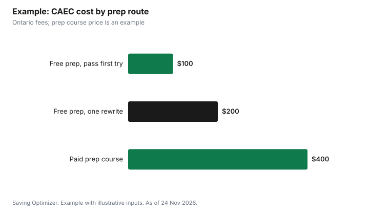

Education · Canada
GED in Canada: Cost and How to Prepare for Free

In Ontario the GED no longer exists. The Canadian Adult Education Credential (CAEC) replaced it on 3 May 2024, and it costs $100 to register for all five tests through TVO's Independent Learning Centre, the only provider in the province. A $100 fee covers a second attempt at any tests you don't pass. Free prep is available through public libraries, school board adult learning centres and Employment Ontario literacy and basic skills programs.
Key takeaways
- The CAEC replaced the GED in Ontario on 3 May 2024. Passing it earns an Ontario High School Equivalency Certificate.
- Cost in Ontario: $100 for all five tests; $100 to rewrite any tests you didn't pass. Fees are non-refundable.
- Eligibility: 18 or older, Ontario resident for at least six months, no Ontario diploma, and not registered in a high school.
- You need 55% on each of five tests: writing, reading, mathematics, science and social studies.
- Old GED passes count toward the CAEC in Ontario until May 2027.
Provincial testing
High school equivalency testing is run by each province. In Ontario, TVO ILC administers the CAEC at testing centres, including some colleges. Tests are on computers, booked in advance, and take about 7.5 hours in total; a centre won't offer all five on one day. Other provinces and territories are moving to the CAEC on their own schedules. Check your provincial ministry of education or advanced education for the current test, fee and centres if you live outside Ontario.
Fees
| Item | Cost | Notes |
|---|---|---|
| Registration for all five tests | $100 | Valid for one year from acceptance |
| Second attempt at failed tests | $100 | Available one month after a non-passing score |
| Writing test rescore | Check with TVO ILC | Rules set in the national administration guide |
| Prep materials | $0 to about $50 | Library books and free online practice cover most needs |
If the $100 is a barrier and you receive Ontario Works, ask your caseworker. Ontario's service listings say financial assistance may be available. Rewrites are limited too: TVO ILC says you can rewrite each subject test once per calendar month, up to three times a year.
Free prep
You don't need a paid course to prepare. Free options include:
- Your public library: study guides, practice books and quiet study space, and sometimes free tutoring programs.
- School board adult learning centres: many run free upgrading classes in math, reading and writing.
- Employment Ontario Literacy and Basic Skills programs: free help with reading, writing and math for adults.
- Free online practice in math and science from public education sites.
- Official sample questions from the CAEC testing service, if available for your province.
Alternatives
Equivalency is not always the best choice. If you are close to graduating or plan to go to university, finishing the Ontario Secondary School Diploma may serve you better. Board adult day schools offer free credits, and TVO ILC credits cost $40 each for most Ontario residents. Prior learning assessment can shorten the path. Our guide to finishing high school as an adult compares the routes. Colleges also offer mature student admission and academic upgrading, and some universities admit mature students without a diploma; see mature student admission.
Steps
- Check you are eligible: 18+, six months in Ontario, no diploma, not in high school. If you're 18, get a date-of-leaving letter from your last school.
- Register and pay $100 through the TVO ILC portal. Review can take up to about 20 business days.
- Study free with your library and an adult learning centre, focusing on your weakest subject.
- Book tests one at a time at a testing centre within a year.
- Aim for 55% on each test. If you miss one, pay $100 for a second attempt after a month.
Example: the cost of a slower path
An example adult compares paying for a prep course with free prep, and what one failed test adds.

Free prep with a pass on the first try costs $100. Adding an example $300 paid prep course brings it to $400. Free prep but failing one test and rewriting costs $200. The cheapest path is free study done well, booking tests only when practice scores are comfortably above 55%.
Sources
- TVO ILC, Earn the Canadian Adult Education Credential (CAEC) (replaced GED 3 May 2024; $100 for five tests; $100 rewrite; eligibility; 55% per test; about 7.5 hours; GED subjects accepted until May 2027), checked 24 Nov 2026.
- Ontario Ministry of Labour, Immigration, Training and Skills Development, memo: Replacement of the Canadian GED with the CAEC, 14 May 2024.
- Community service listing (211 Ontario / CIOC), Canadian Adult Education Credential: financial assistance may be available for Ontario Works recipients, updated 25 Nov 2025.
Frequently asked questions
Can you still take the GED in Canada?
Not in Ontario. The CAEC replaced the GED in Ontario on 3 May 2024. Other provinces are moving to the CAEC on their own schedules, so check with your provincial ministry.
How much does the CAEC cost in Ontario?
TVO ILC charges $100 to register for all five tests, and $100 for a second attempt at any tests you didn't pass. Fees are non-refundable.
Who can write the CAEC in Ontario?
Adults 18 or older who have lived in Ontario for at least six months, don't have an Ontario diploma and aren't registered in a high school.
What score do you need to pass the CAEC?
You need 55% on each of the five tests: writing, reading, mathematics, science and social studies.
Do my old GED test passes still count?
A completed GED stays valid. In Ontario, GED subjects you passed count toward the CAEC until May 2027.
Researched and drafted with AI assistance and fact-checked against official Canadian sources. How we create content.
Note: Fees and rules can change. Confirm with TVO ILC or your provincial ministry before you register. Education only.